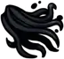
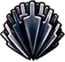
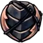

Hollow Knight
El Caballero
Es el personaje que el jugador controla a lo largo de la historia principal en Hollow Knight.
Al principio del juego, el Caballero está equipado solo con su Viejo Aguijón y la habilidad para curarse a sí mismo usando alma. A lo largo del juego, consigue nuevos poderes y Objetos que le permitirán avanzar dentro de Hallownest, el reino donde se desarrolla el juego, desbloqueando nuevas zonas y personajes.
El Caballero es un Recipiente desechado. Es uno de los hijos del Rey Pálido y la Dama Blanca, nacido en el Abismo con el Vacío dentro de su caparazón.
Después de salir de su lugar de nacimiento en el Abismo, el Caballero fue testigo de cómo el Rey Pálido sacaba a su hermano, el Hollow Knight, del Abismo. La entrada al Abismo fue sellada, causando que El Caballero volviera a caer. Algún tiempo después de esto, a pesar de que la entrada estaba sellada, El Caballero y algunos de sus hermanos lograron escapar del Abismo.
Eventualmente, el Caballero terminó vagando fuera de Hallownest por razones desconocidas. Pasar tiempo en ese área hizo que el Caballero perdiera la memoria, pero estar allí le dio cierta resistencia. Regresó a Hallownest después de una llamada de El Destello o del Hollow Knight.
Salud y Alma
Salud
La salud se representa con mascaras, visibles en la esquina superior izquierda de la pantalla. El Caballero comienza el juego con 5 mascaras, pudiendo conseguir más obteniendo Fragmentos de mascara. Cuatro fragmentos de máscara crearan una nueva mascara de salud, siendo posible obtener hasta un máximo de 9 mascaras. El jugador perdera salud al recibir daño por enemigos o por obstaculos del entorno. Para restaurar la salud el jugador podra sentarse en un Banco o usar la Concentracion.
Mascara Saviavida
Las Mascaras de saviavida son proporcionadas por los Germenes de vida y ciertos Amuletos. Son máscaras temporales que no pueden ser restaurados con la concentracion. Las otorgadas por los Germenes de vida no se regenerarán tras sentarse en un banco, mientras que los de los Amuletos se refrescaran al sentarse.
Alma
Alma es el término utilizado para la energia blanca extraida de los enemigos y los Totems del Alma. Esta representado en el HUD del jugador por un medidor circular que se llena de liquido blanco, revelando dos agujeros para los ojos y dando al medidor la apariencia de una mascara.
El alma se utiliza para lanzar Hechizos que infligen daño o usar la Concentración, que sana al jugador a lo largo del tiempo. Cuando el jugador gana suficiente alma para lanzar un hechizo, el medidor se iluminara brevemente y se reproducira un sonido.
Hechizos y Habilidades
Los hechizos son habilidades que el Caballero púede activar ya sea manteniendo oprimido lanzar hechizo (Concentración) o tocando Lanzar hechizo o Hechizo rápido mientras está neutral (Espíritu vengativo/Alma sombría) o mientras se mantiene oprimido arriba (Espectros Aulladores/Chillido del Abismo) o abajo (Salto desolador/Oscuridad descendente).
-
Concentra el alma reunida para reparar tu coraza y curarte el daño.
Golpea a los enemigos para reunir alma.
-
Conjura un espíritu que volara hacia el frente y quemara a los enemigos que se crucen en su camino.
Para conjurar este espíritu, se requiere alma. Golpea a los enemigos para reunir alma.
-
Golpea el suelo con la intensa fuerza del alma. esta fuerza puede destruir a los enemigos o derribar estructuras fragiles.
Para conjurar esta fuerza, se requiere alma. Golpea a los enemigos para reunir alma.
-
Sacude a los enemigos con un alma estridente.
Para conjurar los espectros, se requiere alma. Golpea a los enemigos para reunir alma.
-
Conjura una sombra que volará hacia el frente y quemará a los enemigos que se crucen en su camino.
Para conjurar esta sombra, se requiere alma. Golpea a los enemigos para reunir alma.
-
Golpea el suelo con una fuerza combinada de alma y sombra. Esta fuerza puede destruir a los enemigos o derribar estructuras fragiles.
Para conjurar esta fuerza, se requiere alma. Golpea a los enemigos para reunir alma.
-

Sacude a los enemigos con la fuerza de un alma estridente y la sombra.
Para conjurar los espectros, se requiere alma. Golpea a los enemigos para reunir alma.
Concentracion
Espiritu Vengativo
Salto Desolador
Espectros Aulladores
Alma sombria
Oscuridad Descendiente
Chillido del Abismo
Las habilidades son obtenidas tras conseguir distintos objetos a lo largo de Hallownest y hacen que sea más fácil explorarlo.
-

Capa hecha de hebras de ala de polilla. Permite al portador realizar un Avance Rápido en el suelo o por el aire.
-
Garra tallada a partir de hueso. Permite al portador colgarse en las paredes e impulsarse desde ellas.
-

El núcleo de energía de un antiguo gólem minero rodeado de un potente cristal. Es posible canalizar la energía del cristal para lanzar al portador hacia delante a velocidades peligrosas.
-
Alas de materia etérea que centellean en la oscuridad. Permite al portador volver a saltar en el aire.
-
Fruto formado con una única lágrima solidificada. Cuando se ingiere, proporciona protección frente a los abrasadores estanques ácidos que se encuentran en determinadas partes de Hallownest.
-

Capa formada con la sustancia del Abismo. Permite al portador realizar un Avance Rápido a través de enemigos y sus ataques sin recibir daño.
-
Permite al portador cortar el velo que separa el mundo onírico del real. Se puede usar para revelar sueños ocultos o abrir puertas.
-

El poder del Aguijón Onírico se ha despertado por completo y te permite acceder a determinados recuerdos protegidos.
-
Permite al portador viajar instantáneamente a través de los sueños. Algunas áreas pueden no tener una fuerte conexión con ningún sueño,impidiendo el uso de los Portales Oníricos.
Capa de ala de Polilla
Garra de Mantis
Corazon de Cristal
Alas de Monarca
Lagrima de Isma
Capa Sombria
Aguijon Onirico
Aguijon Onirico despertado
Portal Onirico
Aguijon
Aguijón es el término usado para describir las armas que blanden varios enemigos, NPCs y jefes de Hallownest, incluido El Caballero. El Forjaguijones que se encuentra en Ciudad de Lágrimas puede mejorar el Aguijón del Caballero hasta 4 veces proporcionando suficiente Geo y Minerales Pálidos, aumentando el daño del arma.
Los amuletos como Fuerza frágil y Furia de los caídos también aumentan el daño del Aguijón.
Mejoras del Aguijon
Aguijon antiguo
Un arma tradicional de Hallownest. Su hoja roma es muestra de su antigüedad y desgaste
Arma por defecto
Daño:5
Aguijón afilado
Un arma tradicional de Hallownest, restaurada a su estado letal
Coste de mejora: 250 Geo
Daño: 9
Aguijon estilizado
Un arma con molduras de Hallownest. La hoja tiene un equilibrio exquisito
Coste de mejora: 800 Geo + 1 Mineral Pálido
Daño:13
Aguijon Espiral
Un potente arma de Hallownest, mas perfeccionada que las demas
Coste de mejora: 2000 Geo + 2 Minerales Pálidos
Daño: 17
Aguijon Puro
El arma definitiva de Hallownest. Este antiguo aguijón, que se ha forjado hasta alcanzar la perfección, revela su verdadera forma
Coste de mejora: 4000 Geo + 3 Minerales Pálidos
Daño: 21
Artes del aguijon
Las artes del aguijón son habilidades que aprende el Caballero de los Maestros del aguijón. Para ejecutar un arte del aguijón el jugador tiene que mantener pulsado atacar para cargarlo y soltarlo pulsando algún otro botón opcional dependiendo del arte concreto. El daño de las artes del aguijón se calcula multiplicando el daño del aguijón que tengamos, de manera que cuanto mejor sea nuestro aguijón más daño causará dichas habilidades.
El amuleto Gloria del Maestro de aguijones reduce el tiempo de carga necesario para las Artes del Aguijón.
El daño de estas habilidades no aumenta con Fuerza frágil, pero si con Furia de los caídos.
Amuletos
Los Amuletos son un tipo especial de objetos en Hollow Knight que mejoran al Caballero proveéndole de varios bónuses y habilidades. Para equiparse amuletos son necesarias muescas y sólo es posible cambiar los amuletos si se está sentado en un banco.

Muescas
Las Muescas de Amuletos son necesarias para poder equiparse Amuletos. Diferentes Amuletos requieren una distinta cantidad de Muescas. El Caballero comienza con 3 Muescas. 8 más pueden ser encontradas a lo largo del juego, para un total de 11 Muescas.
Cartas sobre los amuletos
Brujula Caprichosa
muescas:

Susurra su ubicación al portador siempre que se abra el mapa
Enjambre Recolector
muescas:
Un enjambre que seguirá al portador y reunirá todos los geo sueltos
Coraza Robusta
muescas:
Al recuperarse del daño recibido, el portador será invulnerable durante más tiempo
Atrapaalmas
muescas:
Aumenta la cantidad de alma obtenida al golpear a un enemigo con el aguijón
Piedra de Chaman
muescas:
Aumenta el poder de los hechizos para hacer más daño a los enemigos
Devoraalmas
muescas:
Aumenta mucho la cantidad de alma obtenida al golpear a un enemigo con el aguijón
Maestro de las Embestidas
muescas:
El portador podrá realizar el Avance Rápido con más frecuencia, así como realizar el Avance Rápido hacia abajo
Maestro de Sprints
muescas:
Aumenta la velocidad al correr del portador, permitiéndole esquivar el daño o adelantar al rival
Cancion de Larvas
muescas:
Consigue alma al recibir daño
Elegia de Larvamosca
muescas:
Infunde a las armas una fuerza sagrada. Cuando el portador tenga toda la salud, lanzará rayos de energía blanca y caliente desde su aguijón
Corazon Fragil
muescas:
Aumenta la salud del portador, con lo que puede recibir más daño. Este amuleto es frágil y se romperá si su portador muere
Codicia Irrompible
muescas:
Permite al portador encontrar mas Geo al derrotar enemigos.Este amuleto es irrompible
Fuerza Fragil
muescas:
Fortalece al portador, lo que aumenta el daño que este inflige a los enemigos con su aguijón. Este amuleto es frágil y se romperá si su portador muere
Fuerza irrompible
muescas:
Endurece al portador, aumentando el daño que causa a los enemigos con su aguijón. Este amuleto es irrompible
Tuercehechizos
muescas:
Reduce el coste de alma al lanzar hechizos
Cuerpo Firme
muescas:
Evita que su portador rebote hacia atrás al golpear a un enemigo con su aguijón
Duro Golpe
muescas:
Aumenta la fuerza del aguijón del portador, lo que hace que los enemigos retrocedan más al recibir un golpe
Corte Rapido
muescas:
Permite al portador lanzar cortes mucho más rápido con su aguijón
Largoaguijon

muescas:
Aumenta el alcance del aguijón del portador
Marca de Orgullo
muescas:
Aumenta mucho el alcance del aguijón del portador
Furia de los Caidos
muescas:
La fuerza del portador aumentará cuando se encuentre cercano a la muerte
Espinas de Agonia
muescas:
Al recibir daño, hace brotar vides espinosos que dañan a los enemigos cercanos
Coraza de Baldur
muescas:
Protege a su portador con una dura coraza mientras concentra el alma
Termanidos
muescas:
Transforma el hechizo Espíritu vengativo en una horda de volátiles bebés trematodos
Blason del Defensor
muescas:
Hace que el portador emita un olor heroico
Utero Brillante
muescas:
Drena el alma de su portador y la usa para dar a luz a varias crías
Concentracion Rapida
muescas:
Aumenta la velocidad de la concentración de alma, con lo que el portador puede curarse de los daños antes
Concentracion Profunda
muescas:
El portador tardará más en concentrar alma, pero su efecto de curación se duplicará
Corazon Saviavida
muescas:
Al descansar, el portador obtendrá un revestimiento de saviavida que le protege de una pequeña cantidad de daño
Nucleo Saviavida
muescas:
Al descansar, el portador obtendrá un revestimiento de saviavida que le protege de una gran cantidad de daño
Bendicion de Joni
muescas:
El portador tendrá una coraza más sana y podrá recibir más daño, pero no podrá curarse concentrando alma
Sangrecolmena
muescas:
Cura las heridas del portador con el paso del tiempo, lo que permite recuperar salud sin concentrar alma
Hongo con Esporas
muescas:
Al concentrar alma, emite una nube de esporas que daña lentamente a los enemigos
Sombra Afilada
muescas:
Al usar el avance rápido sombrío, el cuerpo del portador se volverá afilado y dañará a los enemigos
Forma de Unn
muescas:
Al concentrar alma, el portador adoptará una nueva forma y podrá moverse libremente para evitar a los enemigos
Gloria del Maestro de Aguijones
muescas:
Aumenta el dominio de las Artes del aguijón del portador, lo que le permite concentrar su poder más rápido y desatar las artes antes
Cancion de Tejedora
muescas:
Invoca pequeñas tejedoras para acompañar y proteger al solitario portador
Portador Onirico
muescas:
Permite al portador cargar el Aguijón Onírico más rápido y reunir más alma al golpear enemigos
Escudo Onirico
muescas:
Conjura un escudo que sigue al portador e intenta protegerle
Niño de Grimm
muescas:
Llevado por aquellos que forman parte del Ritual de la companía de grimm. El portador debe buscar los grimarios y recolectar sus llamas. Las llamas que no se han recogido aparecerán en el mapa del portador
Melodia Despreocupada
muescas:
Contiene una canción de protección que defenderá al portador del daño
Alma de Monarca
muescas:
Amuleto sagrado que simboliza la unión entre seres superiores. El portador absorberá lentamente el alma interminable que contiene. Abre el camino al lugar de nacimiento
Corazon del Vacio
muescas:
Unifica el vacío bajo la voluntad del portador. Este amuleto forma parte de su portador y no se puede eliminar del equipo